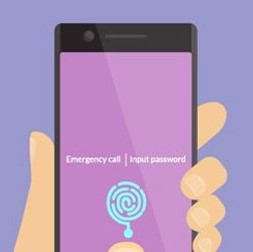

在2018年，身份和访问管理（IAM）在确保组织拥有强大的网络安全实践方面发挥了至关重要的作用。 从缓解内部威胁到建立适当的网络卫生，IAM的重要性不再受到质疑。
我们的创始人兼首席执行官Robert Herjavec认为，“身份是他们自己的太阳系......它是自己的星系”。 由于用户（即员工）是“互动的”，企业在访问控制，特权访问和身份治理方面面临挑战。
随着IAM公司试图将“身份背景”扩展到网络安全市场的所有方面，身份正在成为“自己的太阳系”。
上周RSA会议上有关于身份的会议数量在以不成比例的方式增加，而且更多的公司在身份和访问管理（IAM）的框架下用“身份管理”，“身份环境”等术语轻推自己的方式。特权访问管理，“隐私”，“行为生物识别”，“生物识别平台”和“以人为本的安全”在他们的摊位上大量涌现。
如果网络安全市场是一个全球性的市场，每个细分市场都会占据一席之地 - 一个用于端点安全的大陆，一个威胁情报的群岛 - 身份和访问管理在哪里适合？
“身份是自己的太阳系，”全球IT安全公司Herjavec Group的首席执行官兼鲨鱼坦克投资人Robert Herjavec说。 “它自己的星系。”
“用户的问题在于他们是互动的，”他解释道。 身份管理对企业来说是一个挑战的原因是因为用户被雇用，被解雇，获得促销，访问敏感文件系统，共享机密数据，发送带有潜在机密信息的电子邮件，尝试访问我们无法访问的数据，尝试做我们不应该做的事情。 “一劳永逸”对我们不起作用。
幸运的是，好的IAM变得越来越容易。 Herjavec指出了像Sailpoint和Saviynt这样的身份治理工具以及像CyberArk这样的特权访问管理工具，他说现在“它们不仅可以管理，而且从价格角度来看基本上是可以消费的”。
这些变化并不是突然产生的，市场对IAM的需求一直很高，但最近的违规行为（Equifax），新的合规性压力（GDPR）和隐私披露（Cambridge Analytica / Facebook）增加了身份安全和治理等方面的压力。 正如Ping Identity的高级技术架构师Sarah Squire所说，“Facebook的安全团队非常棒 - 这是糟糕的治理。 Equifax的安全性很差。”
什么力量正在形成这个身份星系(Identity Galaxy)的形状？ 继续阅读更多内容。
在Equifax遭到破坏并且Alteryx泄露（暴露了Experian数据）之后，许多组织使用的基于知识的身份验证（KBA）系统受到了损害。 为什么要求客户通过确认他们的前雇主，地址或母亲的生日来验证他们的身份，当攻击者也知道所有这些信息时 - 以及他们订阅的杂志以及他们是否在后院有一个游泳池？
织已经习惯于表现得好像数据库中的任何名称都是属于他们的名称 - 收集，存储，传输，购买和销售个人的个人身份信息而相对不受惩罚。 欧盟的通用数据保护法规（GDPR）改变了这一切 - 它增强了组织对身份治理的需求。
GDPR要求组织在收集或分享其个人信息时随时获得个人的明确许可 - 自动修改的框不够明确 - 个人必须能够随时轻松撤销该许可。 个人有“被遗忘的权利”。 此外，必须保留在数据流动的任何地方使用此身份信息的记录。
GDPR适用于任何地方的任何欧盟公民数据，因此它影响到全球各地的公司，并且它适用于组织的客户及其员工，因此它将对其治理和内部和外部身份的安全性产生影响。 ForgeRock专门为外部用户提供IAM，为其产品添加了GDPR仪表板。
GDPR的法案执行将于5月25日开始（自该法案正式实施以来的两年宽限期之后）。 这些行动包括但不限于2000万欧元的罚款或年收入的4％，以较高者为准。
“GDPR真的是开创性的，”Herjavec说。 与PCI一样，它将推动整个行业发展，但与PCI不同，它会影响所有行业。 他说，他“100％肯定”加拿大和美国将拥有自己的版本。
Squire提供了其他一些例子，说明世界需要哪些方式让个人在保持隐私的同时提供有关自己的经过验证的声明。
有一些旧的用例可以重新制作。 例如，酒吧的保镖可以验证某人是否具有合法的饮酒年龄，而无需知道他们的姓名 - 政府机构是否可以在不知道该人何时何地饮酒的情况下验证该信息？
更重要的是，社交媒体和新闻网站是否可以利用它来打击用于影响选举的虚假宣传活动？ 例如，该网站是否可以验证某人是注册选民或某个国家的居民？
从技术上讲，这些东西都在触手可及，Squire说。 “这就是改变了，”Ping Identity的高级技术架构师Sarah Squire说，他拿着智能手机。 “这些可以存储私钥。” 她说，现在的限制是监管。
身份治理提供商SailPoint的首席执行官兼联合创始人Mark McClain说：“治理的世界是关于谁可以访问什么，谁应该访问什么，他们是否正确使用它。” “大多数客户都远离前两个，他们甚至不应该担心第三个。”
SailPoint和其他身份管理和管理（IGA）解决方案提供商正在通过为安全专业人员提供更加用户友好的基于云的管理工具来加速这一过程。 然而，在后端，云服务只会使治理问题复杂化，除了内部部署资源之外，用户越来越多地访问越来越多的帐户。
Saviynt是专门针对云计算的IGA解决方案，并表示它是“开创性的IGA 2.0”。 其他一些人，比如Sailpoint和One Identity，则通过云迁移来支持客户。
One Identity产品管理高级主管杰克逊·肖（Jackson Shaw）表示，“在本地软件上会有很长的篇幅，”他指出了它对工业控制系统环境的重要性。 “未来几年，云将成为一个巨大的复杂因素......这确实使治理变得复杂化。
随着IAM管理进入云计算，身份即服务正在变得真实。 一些治理提供商正在成为满足您所有身份需求的全栈一站式服务，并且在3月份，Google发布了完整的“身份即服务”产品，该产品使用开放标准：云身份。
在一篇博客中，Cloud Identity的高级产品经理Vidya Nagarajan写道：“今天，[用户]需要在任何地方自由工作，并了解这些背景 - 他们需要做什么，在哪里，用什么设备 - 应该是什么指导企业访问。“
Cloud Identity的服务列表非常广泛。 写了Nagarajan：
“Cloud Identity的单点登录支持SAML 2.0和OpenID，可与数百个开箱即用的应用程序配合使用，包括Salesforce，SAP SuccessFactors和Box以及Docs或Drive等G Suite应用程序。对于使用GCP资源的组织，Cloud Identity提供了额外的控制，用于管理混合内部部署和云基础架构中的用户和组。
“Cloud Identity包括针对Android和iOS的强大移动设备管理，其中包括自动为用户启用帐户擦除和密码执行等许多功能。管理员可以使用一个集成控制台来实现屏幕锁定，查找设备，实施两步验证和防网络钓鱼安全性密钥，并管理Chrome浏览器的使用情况。他们还可以获取安全报告和分析，例如可疑登录，用户活动报告和审核，以及登录第三方应用，网站和扩展程序。“
“我一直坚信，易用性每次都会胜过安全，”One Identity's Shaw说。 “但直到最近，我们还没有一个可以改变密码的做市商”。
智能手机和其他移动设备现在默认内置多种生物识别身份验证方法。 将其添加到新的WebAuthn标准中，在线生物识别安全性作为在线强认证的低摩擦方法变得更加可行。 4月10日，FIDO联盟和W3C宣布了Web身份标准，S Identity称之为“绝对精彩”的WebAuthn标准，使在线服务提供商能够通过网络浏览器提供FIDO身份验证。 谷歌，Mozilla，微软和Opera都在加入。
基于FIDO的生物识别身份验证增强了安全Web访问，因为它为每个站点使用唯一的加密凭据，消除了从一个站点窃取的密码可以在另一个站点上使用的风险。
生物识别设备的激增也促使公司帮助将所有这些设备组合在一起。 Veridium是ForgeRock和Ping Identity等主要IAM公司的合作伙伴，它创建了一个横向生物识别平台，使这些公司的客户可以插入他们想要的任何生物识别身份验证方法 - 无论是指纹，面部识别还是Veridium自己的四指非接触式行为生物识别技术。
Veridium首席执行官詹姆斯斯特里克兰德说：“我认为让人们坚持使用一种生物识别技术将是愚蠢的。” 他说他只是想让身份管理变得更容易。 “我看到它有多痛苦。我不想要另一次十字军东征。”
尽管如此，在Veridium最近的一项调查中 ，34％的受访者“非常有信心”只有密码可以充分保护数据。
“我认为我的孙子[去年出生]将在密码之前退休，”肖说。
特权升级已经成为针对性攻击的一部分，甚至是针对性的攻击。 解决这个问题的一种方法是密切控制特权内部人员的访问和活动，因为毕竟，一旦攻击者拥有这些凭据，他们本质上就是一个内部人员。
特权访问管理（PAM）专门用于管理最特权用户的访问凭据。 沿着PAM解决方案，如CyberArk，新的云原生PAM解决方案进入市场，如OnionID和Remediant。
CyberArk也试图限制泄露管理员凭据的问题。 该公司去年以4200万美元的价格收购了Conjur，以帮助开发人员快速推送应用程序，而无需使用硬编码凭证和SSH密钥。
Varonis （不是身份管理公司） 最近的研究发现，三分之一的内部用户是“幽灵用户” - 不活跃，但已启用 - 并且30％的公司将超过1,000个敏感文件夹留给所有员工。
正如SailPoint的McClain所说，IAM行业主要专注于访问应用程序。 但是由于文件系统暴露了这么多，Gartner预测，到2022年，80％的数据都将是非结构化的，因此专注于应用程序访问并不够好。 SailPoint是一家身份治理公司，其目标也是解决这个问题，这会导致与Varonis等数据安全/治理公司以及像Forcepoint这样的用户和实体行为分析提供商重叠，后者将自己称为“以人为本的安全”公司。
“你需要统一的图片，记录系统，天空中的神奇电子表格，”麦克莱恩说。 “Everwhere [一个用户]拥有一个ID，她的权限，她的权利。她想要的状态和她的实际状态需要同步。”
越来越多的公司正在使用行为生物识别技术来解决合法登录后发生的攻击问题。 像BioCatch这样的公司正在应用这项技术来防止会话劫持在线打击欺诈。 其他人正在使用行为生物识别来检测公司网络内部用户的异常行为以对抗横向移动。
“[事件响应]多年来一直失败，因为继发感染的证据表明，”Carbon Black首席网络安全官汤姆凯勒曼说。 “动态自适应身份验证就是答案。用户设备和网络必须挑战生物识别标识挑战响应的关键 - 例如，采取自拍并捡起你的鼻子。”
Kellermann指出ID Data Web是这种自适应身份安全产品的一个例子，该产品使用多个来源来验证身份是否准确，然后提供持续的身份验证 - 仅在检测到风险时请求挑战和响应。
BioCatch构建用户的配置文件，其中包含有关其生物特征行为的数据 - 但不包括其身份。 它可以检测异常行为（例如，在导航中），从而在进行欺诈性资金转移之前关闭机器人或攻击者。
这些风险自适应的“升级”认证工具也被吹捧为减少摩擦的方法 - 除非检测到风险，否则用户可能根本不必经历登录过程。
Squire谈到了“零登录”的目标 - 你拿着手机的方式非常明显，如果行为生物识别技术选择了它并自动验证你而不停下来要求你扫描你的脸或指纹。
“[身份管理]将使IoT失败，”IBM Resilient首席技术官兼哈佛大学伯克曼克莱因互联网与社会中心研究员Bruce Schneier说。
Schneier表示，物联网极大地扩展了要管理的机器身份数量，并使常规消费者负责设置，管理和保护这些机器身份以及这些机器彼此之间的通信方式。 随着更多设备连接到互联网，以个人智能手机作为解锁所有内容的钥匙的中心辐射方法最终将无法扩展。
Schneier表示，身份管理公司正在大踏步前进，但是，“他们正在解决昨天的问题。而我们还没有解决这些问题。”
SailPoint的McClain承认机器，机器人和物联网设备现在都需要访问计算和数据资源，并且还必须属于身份治理的范畴。
Blockchain这样的分布式账本平台被广泛用于提供数字身份。 在业务方面，SecureKey建立在IBM Blockchain之上，是加拿大第一个专门针对受监管行业的数字身份网络。 Shocard是面向企业的区块链驱动的IAM和SSO解决方案。
Evernym是一个信用合作社的数字身份平台，它不是建立在区块链上，而是建立在开源分布式账本平台Sovrin之上。 （Sovrin是为“可证实的主张”的自我主权，分散交换而建立的。）
埃森哲和微软联手打造了一个基于区块链的身份基础设施，用于联合国努力为全球100多万人提供法律身份识别，没有像难民这样的官方身份证件。
在上周的RSA会议上，美国国土安全部的科技部门演示了Verified.Me，这是一种身份管理工具，使用区块链将登录功能与属性传递分开。